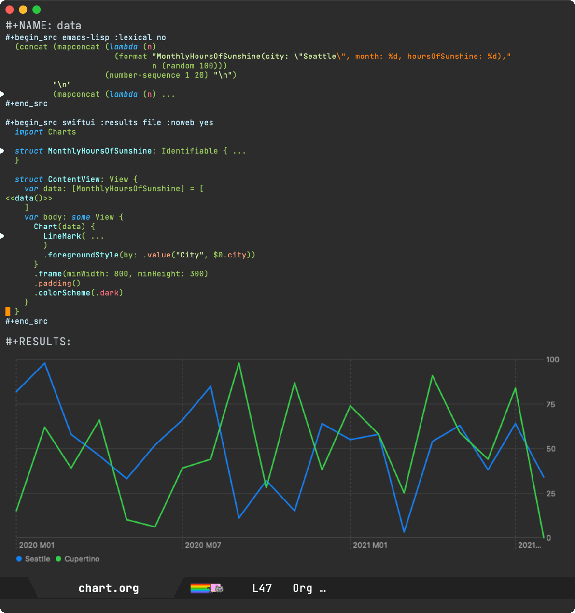
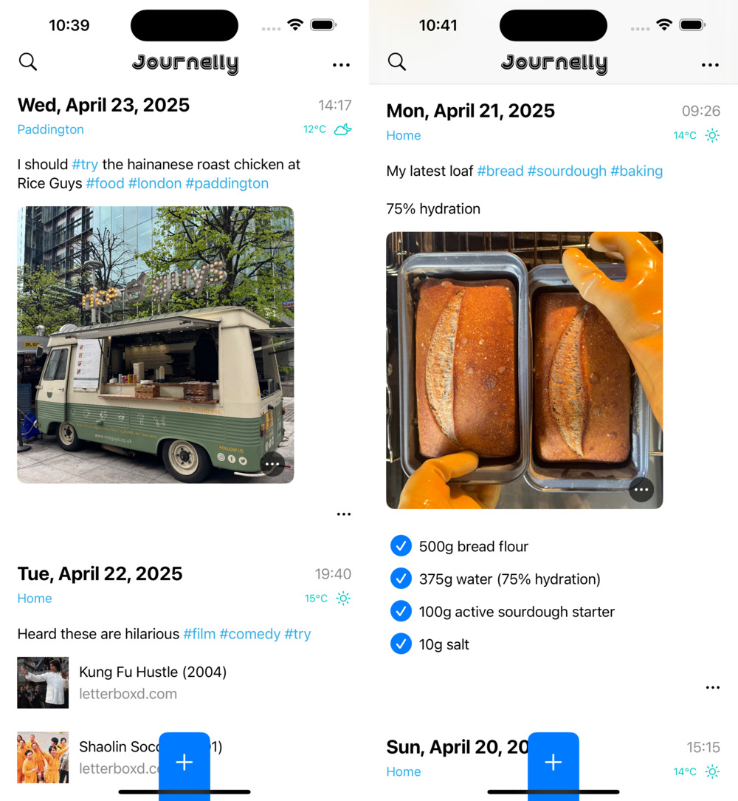
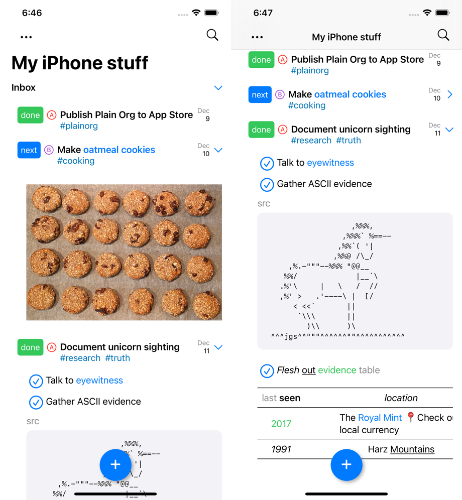

Álvaro Ramírez
Writing experience: My decade with Org
While I missed Emacs Carnival's Take two, with this month's prompt being Writing Experience, I figured I may have a thing or two to share about my Org adoption.
Org mode is often regarded as one of the indispensable Emacs features. A Swiss army of sorts enabling outlining, presentations, task management, agenda, note-taking, blogging, literate programming, the list goes on… At its core, Org features are powered by a versatile markup. Kinda like Markdown but on steroids. When starting with Org, it's easy to feel lost in the overwhelming sea of features.
Luckily, we don't have to know or understand all of Org to get started nor ever need to. You get to pick and use what's useful to you at any given time.
Getting started
Want to get started with outlines? Easy. Let's say you wanted to start collecting python idioms, you can start with an entry like:
* Python idioms - Prefer double quotes if escaping single quotes. - Prefer string interpolation over join. Eg. "'%s'" % member_default. ...
That's precisely what I did when I started using Org nearly 12 years ago. I created a notes file and added my first entry to collect python 2 idioms. While the idioms may be outdated by now (who knows, it's been many years since I've written any significant amount of python code), but hey that's besides the point. I wanted to start a personal notes file and Org sounded awesome for that.
Over time, my notes file grew in usefulness. The more I wrote, the more I could recall with search. That is, until I was away from my computer. At that point, I figured I could just export my notes to HTML (via M-x org-export-dispatch) and post online. Over time, folks started reaching out about something read in my notes, and so by then I suppose I had accidentally become a blogger.
Blogging
In 12 years of "blogging", my approach hasn't changed much. I still write to the very same Org file (beware it's big) I started writing notes to. I found this approach fairly accessible, with little ceremony. When I want to write, I open the usual text file and just write. It wasn't until fairly recently I learned this is often referred to as "one big text file" (OBTF).
My HTML exporting evolved into hacky elisp cobbled together over time. While the code was nothing to rave about, it did the job just fine for well over a decade. Having said that, it was more of an "it works on my machine" sorta thing. Last year, I finally decided to change my blogging approach and built a blogging platform (in 2024?! I know right?!). Well, the modern web has led us to a sea of tracking, bloat, advertising, the list goes on… I wanted to offer a lightweight blogging alternative with none of the typical crummy bits, so I built LMNO.lol. Today, my xenodium.com blog runs off that.
Org and Markdown are friends
LMNO.lol is powered by Markdown. Wait, what? You may be wondering why an Org fan would build a blogging platform powered by a different markup? In a nutshell, reach. While I remain a faithful Org fan for its capabilities, if I want my blogging platform to appeal to more users, I can't ignore the fact that today Markdown is the prevalent format. Having said that, I wasn't about to give up on Org for personal use. I can actually have my cake and eat it too. You see, I continue writing to Org and convert to Markdown before uploading to LMNO.lol via pandoc, the Swiss Army tool of file converters.
Incremental Org adoption
Tables
As you know, my Org adoption started with a very simple outline intended for personal notes, but we know Org is a universe of its own. I soon learned about Org tables.
| name | job | origin | |----------------------+------------------+--------------------| | Fry | Delivery Boy | Earth | | Bender | Bending Unit | Earth | | Leela | Captain | Mutant Underground | | Professor Farnsworth | Scientist | Earth | | Amy Wong | Intern | Mars | | Dr. Zoidberg | Staff Doctor | Decapod 10 | | Hermes Conrad | Bureaucrat | Earth | | Zapp Brannigan | 25-Star General | Earth | | Mom | Owner of MomCorp | Earth | | Nibbler | Leela's pet | Planet Eternium |
I'd keep finding really handy Org tips here and there. Like converting csv to Org by merely selecting the text from my beloved editor.

Tasks
We mentioned Org handling task management, amongst many other things. In a nutshell, tasks in Org are "simple TODO lists", using special keywords. I got started with Org tasks with something like this:
* DONE Call granny * DONE Post on Reddit * STARTED Procrastinate some more * TODO Do your homework
I say "simple TODO lists" (in quotes) because Org task management is a another universe of its own. You can schedule tasks in all sorts of ways (like recurring), as habits, tag them, refile them, etc. and even get a nice agenda view to interact with.
I don’t have an agenda post on this myself, but Christian Tietze has a wonderful write-up showcasing an improved Org-mode agenda display.

Babel
Moving on from task management, I soon discovered babel, another Org super power enabling you to include code snippets. Not too different to Markdown, but I found the ability to evaluate/execute snippets and capture output pretty magical.
#+BEGIN_SRC python
print("Hello python world")
#+END_SRC
#+RESULTS:
: Hello python world
Adding Objective-C Org babel support
At the time, I was writing a fair bit of Objective-C code but found babel support was missing. By looking at ob-C.el and ob-java.el, I figured how to add Objective-C support. Surprisingly, it took very little code and I could now execute Objective-C code just like python from the comfort of an Org buffer.
#+BEGIN_SRC objc
#import <Foundation/Foundation.h>
int main() {
NSLog(@"Hello ObjC World");
return 0;
}
#+END_SRC
#+RESULTS:
: Hello ObjC World
Adding Org block completion
With Org code blocks (and babel superpowers), I soon found myself including lots of snippets in my notes. I tried different different input mechanisms and eventually settled on writing my own company completion backend.

company-org-block is available on GitHub and MELPA.
Later on, with Michael Eliachevitch's help, we got org-block-capf going.

Fitbit API, Org babel, and gnuplot
I continued having fun with Org babel. You can combine source blocks for different purposes, so I used it to fetch and plot Fitbit data via Gnuplot.
#+BEGIN_SRC sh :results table curl -s -H "Authorization: Bearer TOKEN" https://api.fitbit.com/1/user/USER_ID/body/weight/date/2018-06-09/2018-07-11.json | jq '.[][] | "\(.dateTime) \(.value)"' | sed 's/"//g' #+END_SRC #+RESULTS: weight-data | 2018-06-09 | 65.753 | | 2018-06-10 | 65.762 | ... | 2018-07-10 | 64.22 | | 2018-07-11 | 63.95 | #+BEGIN_SRC gnuplot :var data=weight-data :exports code :file images/fitbit-api-org-babel-and-gnuplot/weight.png reset set title "My recent weight" set xdata time set timefmt '%Y-%m-%d' set format x "%d/%m/%y" set term png set xrange ['2018-06-09':'2018-07-11'] plot data u 1:2 with linespoints title 'Weight in Kg' #+END_SRC

Adding SwiftUI Org babel support
Having learned that babel can generate images (like Gnuplot), I figured I could have fun with SwiftUI too and built ob-swiftui. Also on MELPA.

Adding Org links (DWIM style)
Notes aren't complete without links to references. I was already using a keyboard shortcut of sorts, but I figured I could make it much smarter. As in DWIM: Do what I mean. Like automatically fetching link title from the web and other things.


Scraping useful links
Comments in posts can be a great source of recommendations (someone asking for books, blogs, etc), so I figured I could get Emacs to extract all links from an online post and dump them to an org file.

Change your MAC address in Org of course
Cause you never know when you're gonna need it, I randomly saved a snippet to change your MAC address from the comfort of your Org notes. Execute via C-c C-c.
#+begin_src bash :dir /sudo::
changeMAC() {
local mac=$(openssl rand -hex 6 | sed 's/\(..\)/\1:/g; s/.$//')
ifconfig en0 ether $mac
ifconfig en0 down
ifconfig en0 up
echo "Your new physical address is $mac"
}
changeMAC
#+end_src
#+RESULTS:
: Your new physical address is b4:b2:f8:77:bb:87
By the way, noticed the :dir /sudo:: header? It enables executing the snippet as root.
Generating documentation for your Emacs package
Having built a handful of Emacs packages, maintaining a README.org documenting commands available (and keeping it up-to-date) was a bit of a chore. I figured you could automate things and generate a nice Org table documenting your package commands and customizable variables.
When you see this table in my GitHub project, you now know how it was generated.

A noweb detour: the lesser known Org babel glue
While Org babel's noweb support isn't super widely known, I learned it's great for glueing org babel blocks. I love how Org knowledge (and Emacs benefits really) just keep compounding. I started by just writing a simple Org outline. Remember?

LLMs join the babel chat
In 2023, I started experimenting with LLMs and Emacs integrations. Naturally, I had to add babel support too, so ob-chatgpt-shell (MELPA) and ob-dall-e-shell (MELPA) were added to the mix.

Smarter Org capture templates
Your knowledge base is only as useful as its wealth. The more you write, the better. And of course, the less friction, the more likely you are to write more.
Org capture is super useful to save your thoughts quickly into an Org file. You can come up with all sorts of templates to expedite the process. In addition to the base structure, I figured I could automatically capture my current location, date, time, and weather as part of a note.

Presenting in style
There are no shortages of Emacs packages leveraging Org mode to give presentations (org-present is one of many). I often enjoy David Wilson's videos. In this one, he shares his presentation setup. I figured it'd be fun to experiment with org-present to spiff things up. I wanted a sort of smart navigation where items are automatically expanded and collapsed as I <tab> my way through a presentation.
Org as lingua franca
With my Org usage growing, I felt like I was missing Org support outside of Emacs. Web access to my blog wasn't enough. I wanted to quickly capture things while on the go, so I started building iOS apps revolving around my Emacs and Org usage.
Journelly (iOS)
Journelly is my latest iOS app, centered around note-taking and journaling. The app feels like tweeting, but for your eyes only of course. It's powered by Org markup, which can be synced with Emacs via iCloud.


Flat Habits (iOS)
Org habits are handy for tracking daily habits. However, it wasn't super practical for me as I often wanted to check things off while on the go (away from Emacs). That led me to build Flat Habits.


Scratch (iOS)

Plain Org (iOS)
For more involved writing, nothing beats Emacs Org mode. But what if I want quick access to my Org files while on the go? Plain Org is my iOS solution for that.

Org bookmarks
While there is newer content out there, I did capture a handful of Org bookmarks at some point. This one took me down memory lane. Sacha Chua used make these really fun videos interviewing Emacs folks, often discussing their Emacs configs. I learned a ton from these videos. That time, Sacha interviewed Howard Abrams. Gosh, that was over 10 years ago.
Off the top of my head, Karl Voit also comes to mind, for championing Org for years. I know I'm not doing it justice. There are far too many folks I've learned from, who kindly share their knowledge. I've bookmarked some of them in the past.
Naturally, my Org journey wouldn't be possible without Org mode itself and the incredible work from the authors and maintainers. I've personally donated to their cause and even got my ex-employer to donate multiple times.
I could keep showing more things…
You could argue my Org usage is fairly random. Maybe it is. I'd say it's more organic than anything. I more or less started writing outlines and TODO lists, incrementally adopting whatever needed over time. It's up to you how much or little Org you adopt. Whatever you pick is the right answer for you. The Org feature set is just so vast. Some of the things I've tried didn't stick for me like plotting ledger reports or combating spam through Org, but by trying things I got to discover other things that probably did stick.
I could keep going, showing you more examples of the things I discovered, but in such a vast universe what's useful to me may not be useful to you. With such a diverse toolbox, it's highly likely you'll find just the right tool for your needs.
Ok, we get it. The feature set is rich. But most importantly, your data is saved in plain, transparent text, easily accessible to other tools. Heck, I even wrote my own iOS apps to view and edit Org files on the go. In over ten years of using Org, I've never lost access to my data, and I never will. That alone is the non-negotiable cherry on the cake.
Make it all sustainable
Learned something new? Enjoying this blog or my projects? I am an indie dev. Help make it sustainable by ✨sponsoring✨
Need a blog? I can help with that. Maybe buy my iOS apps too ;)